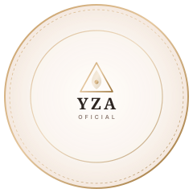

Yzadora Bet · Terapeuta Sistêmica & Consteladora
Existe uma história na sua família que ainda não foi olhada.
Encontros ao vivo, só para mulheres, para você compreender os padrões que repete, liberar o peso que não é seu e ocupar o seu lugar com mais consciência, prosperidade e leveza.
+8
Anos de estudos e visão sistêmica
+7 mil
Mulheres e pessoas atendidas
100%
Acolhimento sem julgamentos

"Quando você dá o lugar certo aos seus pais dentro do coração, a vida volta a fluir para frente."
